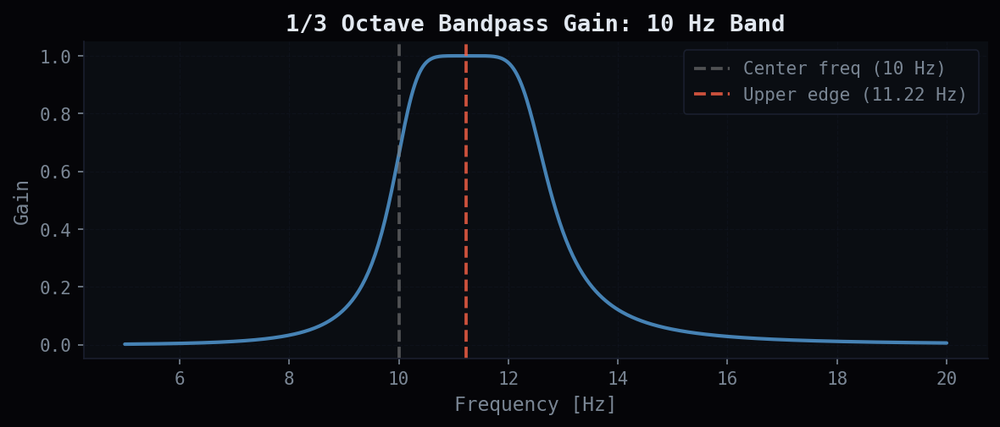
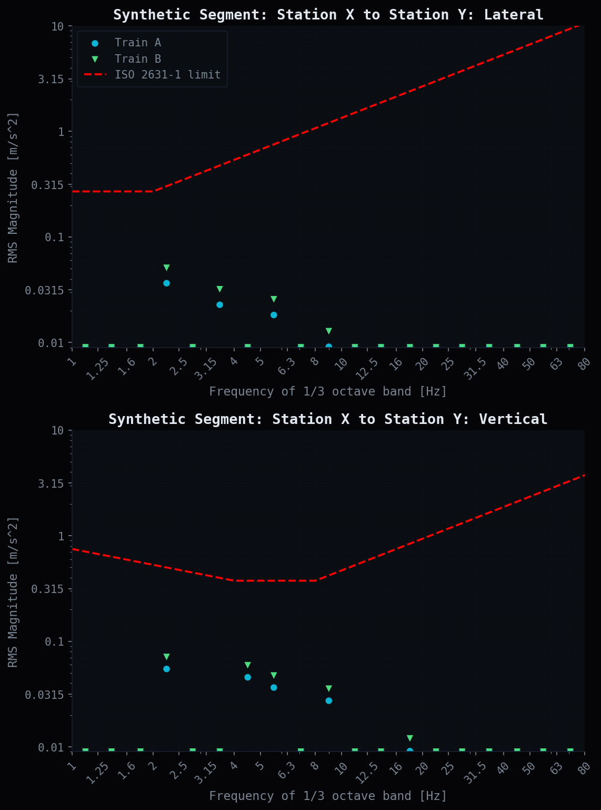

import sys
sys.path.insert(0, '..')
from assets.matplotlib_theme import apply_void_theme, vc
apply_void_theme('dark')Ride Quality Analysis of a Passenger Rail System
signal-processing
python
embedded-systems
transportation
A 1/3 octave band vibration analysis pipeline built from scratch to assess passenger ride comfort against ISO 2631-1 limits.
1 Motivation
I implemented this pipeline while doing ride quality analysis on a passenger rail system. The methodology, including 1/3 octave band filtering, ISO 2631-1 comparison, and multi-run overlays, was worked out from first principles, and the implementation details are surprisingly hard to find. ISO 2631-1 tells you what to compute but not how. The Audio Precision article on fractional octave spectra gets you close but glosses over the FFT normalization. I spent more time on that scaling issue than I would like to admit.
This notebook is a clean reimplementation using synthetic data for validation. No proprietary code or data is used or shown. I’m publishing it because it’s the resource I wish had existed. If you’re an engineer doing this analysis in Python, hopefully this saves you some time.
2 Signal Processing Background
The raw accelerometer output is a time series sampled at 256 Hz, recorded in \(g\) (gravitational units). The first step is unit conversion to m/s^2 by multiplying by 9.80665. From there, the Discrete Fourier Transform (DFT) is computed via FFT to obtain the frequency content of each segment.
The DFT of a length-\(N\) signal \(x[n]\) is:
\[X[k] = \sum_{n=0}^{N-1} x[n] \cdot e^{-j2\pi kn/N}\]
The corresponding frequency bins are spaced by the bin width:
\[\Delta f = \frac{f_s}{N}\]
At \(f_s = 256\) Hz, frequency resolution depends on segment length. Shorter station runs produce coarser bins. The one-sided amplitude spectrum (positive frequencies only) is used, with interior bins scaled by \(\sqrt{2}\) to account for the energy in the discarded negative-frequency half of the two-sided spectrum.
3 1/3 Octave Band Analysis
ISO 2631-1 specifies comfort limits at 1/3 octave band center frequencies, which are tabulated in the standard. Rather than applying a rectangular window over each band, a smooth bandpass gain function is applied at each FFT bin. This follows the fractional octave spectra method described by Audio Precision [2], using a 6th-order Butterworth-style gain centered on the upper edge frequency \(f_m\) of each band:
\[g_n = \sqrt{\frac{1}{1 + \left[\left(\frac{f}{f_m} - \frac{f_m}{f}\right) \cdot 1.507 \cdot b\right]^6}}\]
where \(b = 3\) for 1/3 octave bands. The gain is zero far from the band center and peaks at the center frequency, giving a smooth bandpass response that avoids the spectral leakage artifacts of a hard rectangular window.
The RMS value for each band \(L_b\) is:
\[L_b = \sqrt{\sum_{n=1}^{N} (F_n \cdot g_n)^2}\]
where \(F_n\) is the one-sided amplitude at frequency bin \(f_n\). This value is plotted at the upper edge of each 1/3 octave band and compared against the ISO comfort curves.
import numpy as np
import matplotlib.pyplot as plt
import matplotlib
import pandas as pd
from scipy.fft import fft
from scipy import interpolate
import os
# ISO 2631-1 center frequencies (1 Hz to 100 Hz)
centerF = [1, 1.25, 1.6, 2, 2.5, 3.15, 4, 5, 6.3, 8, 10, 12.5, 16, 20, 25, 31.5, 40, 50, 63, 80, 100]
# Upper band edge: center * 2^(1/6)
# RMS values are plotted at this edge, not the center frequency
outerBandFactor = np.power(2, 1/6)
higherBand = [f * outerBandFactor for f in centerF]
print(f"Center frequencies (Hz): {centerF}")
print(f"Upper band edges (Hz): {[round(f, 3) for f in higherBand]}")Center frequencies (Hz): [1, 1.25, 1.6, 2, 2.5, 3.15, 4, 5, 6.3, 8, 10, 12.5, 16, 20, 25, 31.5, 40, 50, 63, 80, 100]
Upper band edges (Hz): [np.float64(1.122), np.float64(1.403), np.float64(1.796), np.float64(2.245), np.float64(2.806), np.float64(3.536), np.float64(4.49), np.float64(5.612), np.float64(7.072), np.float64(8.98), np.float64(11.225), np.float64(14.031), np.float64(17.959), np.float64(22.449), np.float64(28.062), np.float64(35.358), np.float64(44.898), np.float64(56.123), np.float64(70.715), np.float64(89.797), np.float64(112.246)]4 Core DSP: compute_octave_rms
This function is the core of the pipeline. Given a raw acceleration segment in \(g\), it returns a 20-element array of RMS values, one per 1/3 octave band, ready to be plotted against the ISO limits.
A few implementation notes. The interp1d call allows the spectrum to be evaluated at arbitrary frequencies rather than only at FFT bin edges. This matters at short segment lengths where bin spacing is coarse and some narrow bands may fall between bins entirely. The floor clamp at 0.009 m/s^2 is a display artifact that keeps the log-scale axes clean when a band has essentially zero energy; it has no effect on the ISO comparison. The \(\sqrt{2}\) one-sided scaling is addressed in detail in Section 9.
def compute_octave_rms(segment_g):
"""
Compute 1/3 octave band RMS spectrum from a raw accelerometer segment.
Parameters
----------
segment_g : np.ndarray
Raw accelerometer values in g, sampled at 256 Hz.
Returns
-------
list
RMS magnitude (m/s^2) for each of the 20 1/3 octave bands.
"""
fs = 256 # Hz
N = len(segment_g)
# Convert g to m/s^2
y = segment_g * 9.80665
# FFT, normalized two-sided amplitude spectrum
yf = fft(y)
P2 = np.abs(yf / N)
# One-sided spectrum: [0, N/2], scale interior bins by sqrt(2)
P1 = P2[:int(np.floor(N / 2))]
f = np.arange(0, fs / 2, fs / N)
# Edge case: length mismatch at odd N
if len(f) > len(P1):
P1 = P2[:int(np.floor(N / 2)) + 1]
P1[1:-2] = np.sqrt(2) * P1[1:-2]
# Interpolator to evaluate spectrum at arbitrary frequencies
f_interp = interpolate.interp1d(f, P1)
rms_per_band = []
for v in range(len(higherBand) - 1):
f_bins = f[np.where(np.logical_and(f >= centerF[v], f < centerF[v + 1]))]
L = 0.0
for x in f_bins:
# 6th-order Butterworth bandpass gain per Audio Precision method
gnb = np.sqrt(1 / (1 + np.power(((x / higherBand[v] - higherBand[v] / x) * 1.507 * 3), 6)))
F_n = float(f_interp(x))
L += (F_n * gnb) ** 2
L = np.sqrt(L)
L = max(L, 0.009) # display floor
rms_per_band.append(L)
return rms_per_band5 Validation: Bandpass Gain Shape
Before running data through the pipeline, the bandpass gain function is verified visually. For the 10 Hz band, the gain should peak at the upper band edge and roll off symmetrically on both sides in log-frequency space.
f_demo = np.linspace(5, 20, 500)
fm_demo = 10 * outerBandFactor
gain_demo = np.sqrt(1 / (1 + np.power(((f_demo / fm_demo - fm_demo / f_demo) * 1.507 * 3), 6)))
fig, ax = plt.subplots(figsize=(8, 3.5), dpi=150)
ax.plot(f_demo, gain_demo, color='steelblue', linewidth=2)
ax.axvline(10, color='gray', linestyle='--', alpha=0.6, label='Center freq (10 Hz)')
ax.axvline(fm_demo, color='tomato', linestyle='--', alpha=0.8, label=f'Upper edge ({fm_demo:.2f} Hz)')
ax.set_xlabel('Frequency [Hz]')
ax.set_ylabel('Gain')
ax.set_title('1/3 Octave Bandpass Gain: 10 Hz Band')
ax.legend()
ax.grid(True, alpha=0.3)
plt.tight_layout()
plt.show()
The gain peaks at the upper band edge and rolls off as a 6th-order Butterworth. Using a smooth gain function instead of a rectangular window prevents spectral leakage artifacts at band boundaries from contaminating adjacent band RMS estimates.
6 Data Ingestion and Segmentation
Each accelerometer CSV contains a device metadata header spanning the first 21 rows, followed by the time-series samples. Station departure and arrival row indices are embedded directly in the CSV alongside the acceleration data, so segmenting by station requires no external lookup table. Columns 3 and 4 (zero-indexed) carry the lateral and vertical channels respectively, column 5 carries arrival row indices, and column 6 carries departure row indices.
Each file corresponds to one train run. Multiple runs are loaded together and overlaid on the same plot per segment to compare trains and identify outliers.
# Station labels: outbound (Track 1, segments 1-8) and return (Track 2, segments 9-16)
station_tags = [
"S01", "S02", "S03", "S04", "S05", "S06", "S07", "S08", "S09",
"S08", "S07", "S06", "S05", "S04", "S03", "S02", "S01"
]
segment_titles = []
for i in range(len(station_tags) - 1):
track = "Track 1" if i < 8 else "Track 2"
segment_titles.append(f"{i+1} - {track} - {station_tags[i]} to {station_tags[i+1]}")
print("Segments:")
for t in segment_titles:
print(" ", t)
def load_run(filepath):
"""
Load one accelerometer CSV.
Returns lateral signal, vertical signal, and depart/arrive row index lists.
"""
df = pd.read_csv(filepath, sep=',', dtype='unicode')
df = df.iloc[21:-1, :].reset_index(drop=True)
depart_rows = df.iloc[0:16, 6].values.tolist()
arrive_rows = df.iloc[1:17, 5].values.tolist()
lat = df.iloc[:, 3].astype(float).to_numpy()
vert = df.iloc[:, 4].astype(float).to_numpy()
return lat, vert, depart_rows, arrive_rows
def load_directory(data_dir):
"""
Load all CSV runs from a directory.
Returns parallel lists of labels, lat signals, vert signals, and depart/arrive matrices.
Matrices are transposed so indexing is [segment][run].
"""
labels, lat_matrix, vert_matrix = [], [], []
depart_matrix, arrive_matrix = [], []
for fname in sorted(os.listdir(data_dir)):
fpath = os.path.join(data_dir, fname)
if not os.path.isfile(fpath):
continue
lat, vert, departs, arrives = load_run(fpath)
labels.append(os.path.splitext(fname)[0])
lat_matrix.append(lat)
vert_matrix.append(vert)
depart_matrix.append(departs)
arrive_matrix.append(arrives)
depart_matrix = np.array(depart_matrix).T.tolist()
arrive_matrix = np.array(arrive_matrix).T.tolist()
return labels, lat_matrix, vert_matrix, depart_matrix, arrive_matrixSegments:
1 - Track 1 - S01 to S02
2 - Track 1 - S02 to S03
3 - Track 1 - S03 to S04
4 - Track 1 - S04 to S05
5 - Track 1 - S05 to S06
6 - Track 1 - S06 to S07
7 - Track 1 - S07 to S08
8 - Track 1 - S08 to S09
9 - Track 2 - S09 to S08
10 - Track 2 - S08 to S07
11 - Track 2 - S07 to S06
12 - Track 2 - S06 to S05
13 - Track 2 - S05 to S04
14 - Track 2 - S04 to S03
15 - Track 2 - S03 to S02
16 - Track 2 - S02 to S017 Synthetic Validation Dataset
To validate the pipeline end-to-end without the original accelerometer files, synthetic signals are generated with known frequency content. A realistic rail vibration signal has dominant energy in the 1 to 10 Hz range from suspension dynamics, with decaying higher-frequency content from wheel-rail interaction. Sinusoidal tones are injected at known ISO 2631-1 center frequencies so their presence in the correct octave bands can be verified in the output.
np.random.seed(42)
fs = 256
duration = 60
t = np.arange(0, duration, 1 / fs)
N = len(t)
# Broadband colored noise base: pink-ish spectrum decaying with frequency
freqs = np.fft.rfftfreq(N, 1/fs)
freqs[0] = 1 # avoid divide by zero at DC
pink_spectrum = 1 / np.sqrt(freqs)
pink_spectrum[0] = 0
def colored_noise(scale):
phases = np.random.uniform(0, 2 * np.pi, len(pink_spectrum))
spectrum = pink_spectrum * np.exp(1j * phases)
return np.real(np.fft.irfft(spectrum, n=N)) * scale
# Lateral: pink noise base + tones at ISO center frequencies
lat_synthetic = (
colored_noise(0.004) +
0.008 * np.sin(2 * np.pi * 2.0 * t) +
0.005 * np.sin(2 * np.pi * 3.15 * t) +
0.004 * np.sin(2 * np.pi * 5.0 * t) +
0.002 * np.sin(2 * np.pi * 8.0 * t) +
0.001 * np.sin(2 * np.pi * 12.5 * t)
)
# Vertical: stronger low-freq content, torso resonance region 4-8 Hz
vert_synthetic = (
colored_noise(0.006) +
0.012 * np.sin(2 * np.pi * 2.0 * t) +
0.010 * np.sin(2 * np.pi * 4.0 * t) +
0.008 * np.sin(2 * np.pi * 5.0 * t) +
0.006 * np.sin(2 * np.pi * 8.0 * t) +
0.002 * np.sin(2 * np.pi * 16.0 * t)
)
lat_run2 = lat_synthetic * 1.4 + colored_noise(0.002)
vert_run2 = vert_synthetic * 1.3 + colored_noise(0.002)
print(f"Segment duration : {duration}s ({N} samples at {fs} Hz)")
print(f"Lateral RMS : {np.std(lat_synthetic):.5f} g")
print(f"Vertical RMS : {np.std(vert_synthetic):.5f} g")Segment duration : 60s (15360 samples at 256 Hz)
Lateral RMS : 0.00742 g
Vertical RMS : 0.01319 g8 Plotting Against ISO 2631-1 Comfort Limits
The ISO 2631-1:1985 comfort limits are piecewise-linear in log-log space. The lateral and vertical axes have different curves, reflecting that humans are more sensitive to vertical vibration in the 4 to 8 Hz range, which corresponds to the resonant frequency of the seated human torso. Both limits are overlaid as dashed red lines. Any run with points above the red line is exceeding the comfort standard for that segment and frequency band.
The limit curve coordinates are digitized from the 1-hour reduced comfort boundaries in ISO 2631-1:1985 [1]:
- Lateral: flat at approximately 0.27 m/s^2 from 1 to 2 Hz, rising above 2.5 Hz
- Vertical: most restrictive in the 4 to 8 Hz range, rising above 8 Hz
def plot_rqa_segment(lat_segments, vert_segments, labels, title, markers=None):
"""
Plot lateral and vertical 1/3 octave RMS spectra for one station segment
with ISO 2631-1 comfort limit overlays.
Parameters
----------
lat_segments : list of np.ndarray
vert_segments : list of np.ndarray
labels : list of str
title : str
"""
default_markers = ["o", "v", "^", "<", ">", "X", "1", "2", "3", "4", ","]
if markers is None:
markers = default_markers
# ISO 2631-1 limit curves digitized from standard
lat_lim_x = [1, 2, 2.5, 80]
lat_lim_y = [0.85/3.15, 0.85/3.15, 1.06/3.15, 33.5/3.15]
vert_lim_x = [1, 4, 8, 80]
vert_lim_y = [2.36/3.15, 1.18/3.15, 1.18/3.15, 11.8/3.15]
y_ticks = [0.01, 0.0315, 0.1, 0.315, 1, 3.15, 10]
fig, (ax1, ax2) = plt.subplots(2, 1, figsize=(8.5, 11), sharex=False, dpi=150)
fig.tight_layout(pad=5.0)
for ax, segments, lim_x, lim_y, axis_label in [
(ax1, lat_segments, lat_lim_x, lat_lim_y, "Lateral"),
(ax2, vert_segments, vert_lim_x, vert_lim_y, "Vertical")
]:
for i, seg in enumerate(segments):
rms = compute_octave_rms(seg)
ax.scatter(higherBand[:-1], rms, marker=markers[i % len(markers)], label=labels[i])
ax.plot(lim_x, lim_y, linestyle='dashed', color='red', label='ISO 2631-1 limit')
ax.set_xlim(1, 80)
ax.set_xscale('log')
ax.set_yscale('log')
ax.set_ylim(0.009, 10)
ax.set_yticks(y_ticks, y_ticks)
ax.set_xticks(centerF[:-1], centerF[:-1], rotation=45)
ax.set_xlabel('Frequency of 1/3 octave band [Hz]')
ax.set_ylabel('RMS Magnitude [m/s^2]')
ax.set_title(f'{title}: {axis_label}')
ax.grid(True, 'both', 'both', alpha=0.2)
ax.set_axisbelow(True)
if ax is ax1:
ax.legend(loc='upper left')
return fig
# Two synthetic runs: Run B has elevated vibration to illustrate
# how a degraded train compares against a nominal one on the same segment
lat_run2 = lat_synthetic * 1.4 + 0.001 * np.random.randn(N)
vert_run2 = vert_synthetic * 1.3 + 0.001 * np.random.randn(N)
fig = plot_rqa_segment(
lat_segments = [lat_synthetic, lat_run2],
vert_segments = [vert_synthetic, vert_run2],
labels = ["Train A", "Train B"],
title = "Synthetic Segment: Station X to Station Y"
)
plt.show()
The injected tones at 2 Hz, 5 Hz, and 12.5 Hz show up as the dominant peaks in the correct lateral octave bands. Train B’s elevated vibration pushes several lateral bands closer to the ISO limit. The vertical plot shows the same pattern in the 4 and 8 Hz bands, which are the most constrained by the standard given the torso resonance in that frequency range.
9 FFT Magnitude Scaling
The hardest part of building this pipeline was not the 1/3 octave filter math; it was getting the FFT magnitude scaling right.
The FFT of a real signal produces a two-sided spectrum where positive and negative frequencies each carry half the energy of the original sinusoid. When folding to a one-sided spectrum, the energy in the discarded negative-frequency half must be restored by multiplying interior bin amplitudes by \(\sqrt{2}\). The DC bin (\(k = 0\)) and the Nyquist bin (\(k = N/2\)) are not doubled since they have no negative-frequency counterpart.
The normalization that produces correct results is:
\[P_1[k] = \sqrt{2} \cdot \frac{|X[k]|}{N}, \quad k \in (0,\, N/2)\]
with endpoints left unscaled. Getting this wrong produces output with the correct spectral shape but a consistent vertical offset on every band. The frequency-domain structure looks right, but every RMS value is off by the same factor. Once you have a reference dataset to compare against, the diagnosis is straightforward: a systematic magnitude offset with perfectly matching trends is a scaling error.
Without the \(\sqrt{2}\) correction, the FFT underestimates the true amplitude by a factor of \(\sqrt{2}\). With the correction applied, the peak lands exactly at the expected value.
10 Full Pipeline
The complete pipeline wraps all of the above: given a directory of CSV files, it loads all runs, slices each by station segment using the embedded row indices, and produces one figure per segment with all runs overlaid.
def run_rqa(data_dir, output_dir, start_seg=0, end_seg=16):
"""
Full RQA pipeline: load all runs in data_dir, compute 1/3 octave spectra
per station segment, and save one PDF per segment to output_dir.
Parameters
----------
data_dir : str directory of accelerometer CSV files
output_dir : str directory to write output PDFs
start_seg : int first segment index (inclusive, 0-indexed)
end_seg : int last segment index (exclusive)
"""
os.makedirs(output_dir, exist_ok=True)
matplotlib.use('Agg')
labels, lat_matrix, vert_matrix, depart_matrix, arrive_matrix = load_directory(data_dir)
markers = ["o", "v", "^", "<", ">", "X", "1", "2", "3", "4", ","]
for seg_idx in range(start_seg, end_seg):
title = segment_titles[seg_idx]
lat_segs = [
lat_matrix[run][int(depart_matrix[seg_idx][run]):int(arrive_matrix[seg_idx][run])]
for run in range(len(labels))
]
vert_segs = [
vert_matrix[run][int(depart_matrix[seg_idx][run]):int(arrive_matrix[seg_idx][run])]
for run in range(len(labels))
]
fig = plot_rqa_segment(lat_segs, vert_segs, labels, title, markers)
out_path = os.path.join(output_dir, f"{title}.pdf")
fig.savefig(out_path)
plt.close(fig)
print(f"Saved: {out_path}")
# To run on real data:
# run_rqa(data_dir="./data", output_dir="./output", start_seg=0, end_seg=16)11 Results
If you’re doing this analysis and ended up here, hopefully this saved you some time. The math is all in ISO 2631-1 and the Audio Precision article but nobody puts it together end to end in Python. The FFT scaling issue alone cost me an embarrassing amount of time. Get that right first, verify your gain function shape, and the rest follows pretty cleanly.
Good luck.
12 References
[1] International Organization for Standardization, Evaluation of Human Exposure to Whole-Body Vibration, ISO Standard 2631-1, 1985.
[2] Audio Precision, Inc., “Deriving Fractional Octave Spectra from the FFT with APx,” ap.com. Accessed July 24, 2023. Available: https://www.ap.com/technical-library/deriving-fractional-octave-spectra-from-the-fft-with-apx/
[3] SciPy, “scipy.fft.fft,” docs.scipy.org. Available: https://docs.scipy.org/doc/scipy/reference/generated/scipy.fft.fft.html